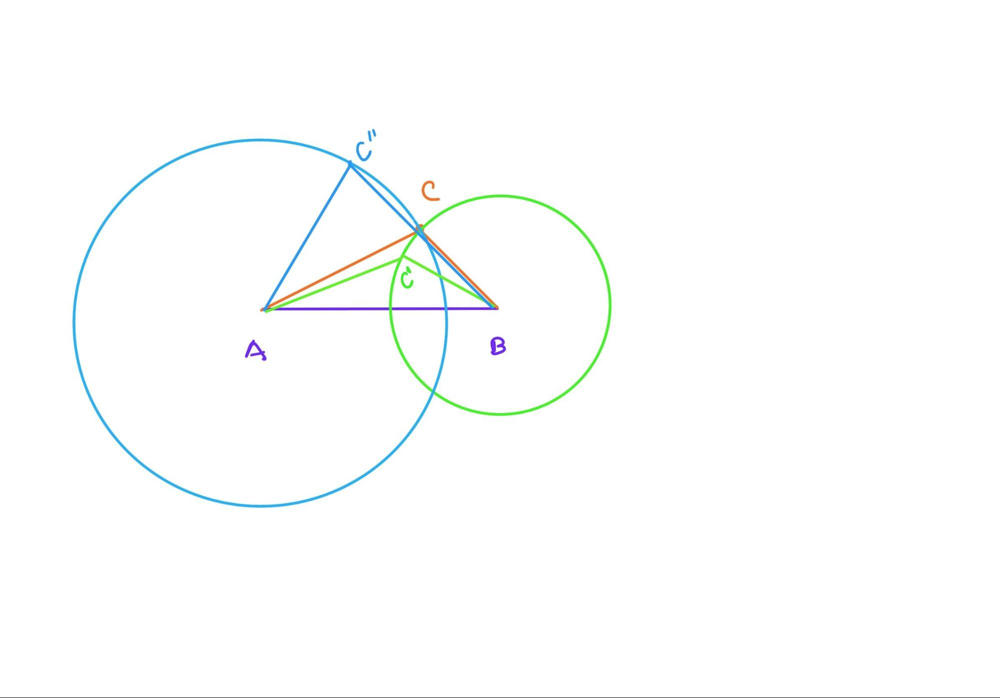

Chapter 7 第六课（命题六&七）
7.1 命题六
如果三角形中两角互等，那么两角各自对应的边也互等。
命题六的内容是证明等角对等边。这道题用的是归谬法，也就是反证法，通过否定等角对边不等的这个可能性来反向证明等角必对等边。而之前的证明题都是正向顺序证明。就好像是材料和模型，之前的证明题是把材料一点点把最后的模型搭起来，而这道证明题是拆模型，看能不能拆出和预期不同的材料。这里比较有意思的是，我们反思自己的接受度，和Alex一起讨论了是否两种方法一样的令人信服。
对于Alex来说，无论是正向的证明还是反向的证明，只要在步骤上逻辑没有问题，他就是可以接受的。对我而言，我可能会下意识的先想一下为什么不能正向证明，是只可以反向来说服么？我也邀请Alex尝试不用归谬法，而是正向顺序的尝试一下证这道题，我们画图思考但并没有找到完全合适的思路。Alex提出用特殊证明法，将等腰三角形设定为直角等腰三角形，然后通过计算sin45度的方法来说明两边相等。虽然这个方法在这里“超纲”，但至少说明了Alex对在学校学习内容的活学活用。
我们没有找到合适的几何思路并不能说明这道题是完全不可以通过正向来证明的，但至少正向证明是困难的，而归谬在这里更易理解。
那么如果一定要用归谬法的话，有什么需要注意的呢？大概就是归谬，在归的时候，要适用于各种情况，将所有其它可能性都否定，这样才会给我们剩下所希望得到的唯一解。
7.2 命题七
在同一条直线（由它的两端点），构建会在同一点相交的给定两线段，那在同一条直线上（由两端点），在同一侧，不能构建出交于另一点的另两条线段，使之与之前的两线段相等，即分别到每个端点的线段。
命题七的命题说明有些绕，但用白话解释一下，是说在一个线段的一侧任意找一点，不能找到第二个点使得连接线段两端点后的新的线段长度相等。
这里的方法还是归谬法，命题内容并不难理解，和Alex很快的一起复盘了欧几里得证明的过程。在这里值得记录的是Alex提出的自己的归谬方法，是运用了运动轨迹和画圆的方法来说明的，记录如下：

以A为圆心，AC为距离画圆；以B为圆心，BC为半径画圆。若BC距离保持不变，C点必须在圆弧上移动，任意其它一点与A的距离必定会发生变化，或大或小，因为圆A与圆B在AB的同一侧只有一个交点。同理若保持AC距离不变，则BC距离发生变化。因此在AB的同一侧找不到第二个点使得AC,BC保持不变。
Alex的这个证明方法是以运动的角度解题，思路十分的开阔，同时Alex在证这道证明题的时候也提到了，如果能找到第二个点使得所连的线段都相等，那么就是在三维空间上，而不是在一个平面上。也就是说Alex已经注意到了这些命题没有言说的先天条件，“平面”几何。
学到这个命题，很容易就会发出疑问，为什么我们需要这个命题呢？似乎看不到一个明确的目的。根据我们以前和编程内容进行比较的学习，不难推测，欧几里得是在为之后的命题证明做铺垫。只是不明确是为证明什么而做准备。其实在生活中也是这样的，有些事情可能看起来在当下是没有意义的，但是其实是之后生活的一部分。通过学习这些命题，至少会帮助我们理解两件事情：一个是拆解；而另一个是准备。将大的任务拆解细化到可以完成的层次，有些准备任务可能在当下是看不到意义的。
参考作业：
- 介绍数独的游戏，试玩，同时思考有没有用到归谬并且这个策略是如何发挥作用的。